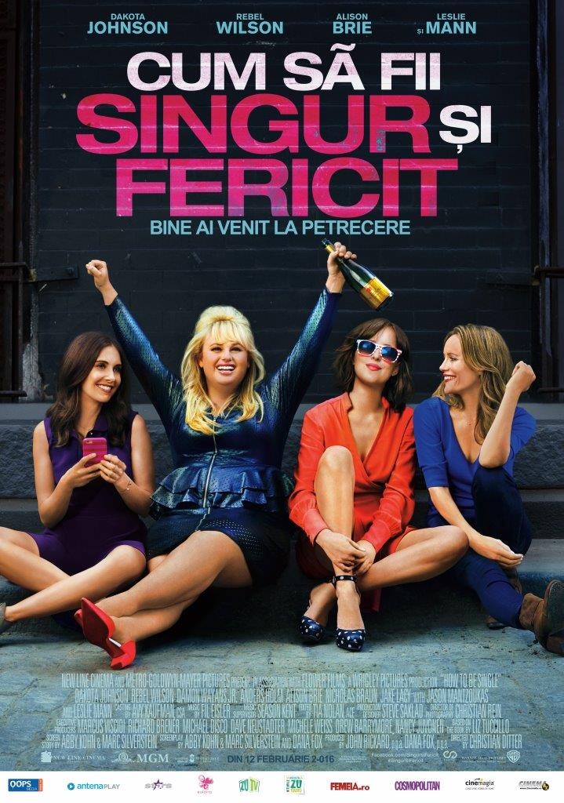

Dragoste
How to Be Single
Sunt unii care se bucură de singurătate, alţii care sunt de-a dreptul nefericiţi şi mai sunt şi... Alice, Robin, Lucy, Meg, Tom sau David…
New York-ul este plin de singuratici care tânjesc după sufletul pereche, după o relaţie amoroasă, după o idilă sau măcar ceva asemănător. Astfel, între texte de agăţat şi aventuri de o noapte, toţi aceşti oameni necăsătoriţi trebuie să înveţe cum să fie singuri şi fericiţi într-o lume în care definiţia iubirii se schimbă în permanenţă.
Oraşul care nu doarme niciodată poate fi o sursă inepuizabilă de distracţie pentru cei care vor şti să se bucure de moment.
Din 12 februarie la cinema, comedia „Cum să fii singur şi fericit” o readuce în rol principal pe Dakota Johnson, de această dată alături de Rebel Wilson, Alison Brie, Damon Wayans Jr. şi Leslie Mann, sub îndrumarea regizorală a lui Christian Ditter.